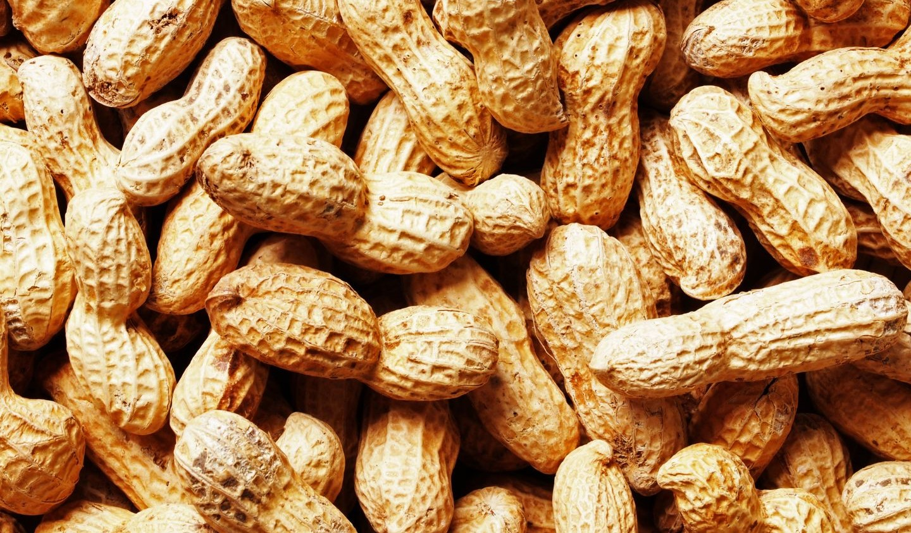

Groundnuts are a type of legume, such as peanuts, almonds, and cashews, that are eaten raw or cooked. They are a staple food in many parts of the world.
Groundnuts!
Groundnuts, also known as peanuts, are a popular and nutritious legume that's widely cultivated and consumed globally. Here are some interesting facts and uses of groundnuts:
Origin and History
Groundnuts originated in South America over 7,000 years ago. They were later introduced to Africa by Portuguese traders and became a staple crop in many West African countries.
Uses of Groundnuts
Groundnuts are incredibly versatile and are used in various forms, including:
1. Snacks: Roasted, boiled, or fried as a snack.
2. Peanut butter: Ground into a creamy paste for sandwiches, smoothies, and baking.
3. Oil: Extracted for cooking, cosmetics, and industrial applications.
4. Flour: Ground into a gluten-free flour for baking.
5. Animal feed: Used as protein-rich feed for poultry and livestock.
Nutritional Benefits
Groundnuts are an excellent source of:
1. Protein: High-quality protein for muscle growth and repair.
2. Healthy fats: Rich in monounsaturated and polyunsaturated fats for heart health.
3. Fiber: Good source of dietary fiber for digestive health.
4. Vitamins and minerals: Rich in vitamin E, potassium, and magnesium.
Fun Facts
1. Groundnuts are not actually nuts, but legumes!
2. The world's largest groundnut producer is China.
3. Groundnuts are a key ingredient in many traditional African dishes, such as peanut stew and groundnut soup.
Overall, groundnuts are a nutritious, versatile, and delicious addition to a healthy diet!
